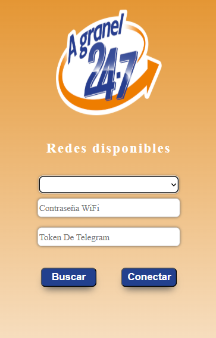

5. Más Configuraciones
Contenido de esta sección
5.1 Balance
Desde esta opción puedes visualizar la cantidad total de dinero que se ha recaudado en la máquina. Esta cifra representa la suma de todos los créditos ingresados.
5.2 Corte de caja
Esta función borra el saldo total acumulado mostrado en la opción de Balance. Es útil para reiniciar el contador después de realizar una recolección o corte administrativo.
Advertencia: Una vez realizado el corte, el valor del balance se reinicia a cero y no puede recuperarse.
5.3 Funciones
Esta opción se encuentra en el menú principal y te ofrece diversas herramientas para completar la configuración de tu tarjeta vending AGranel 24/7.
- Calibración: Ajusta el tiempo necesario para despachar exactamente 1 litro de producto.
- Muestra: Permite despachar producto libremente sin necesidad de ingresar crédito, útil para pruebas o demostraciones.
- Prueba: Verifica si la máquina despacha correctamente 1 litro sin utilizar saldo.
- Drenar: Vacía el contenido de un producto, ideal para limpieza o sustitución del líquido o bomba.
5.3.1 Calibración
Este modo permite ajustar el tiempo exacto que tarda la máquina en despachar 1 litro de producto. Es importante realizar esta calibración al instalar la máquina por primera vez o si se cambia el tipo de bomba o manguera.
- Coloca un recipiente bajo la salida del producto que deseas calibrar.
- Presiona el botón del producto para iniciar el despacho.
- Cuando esté próximo a completar 1 litro, presiona el botón de pausa para detener el flujo.
- La tarjeta AGranel 24/7 guardará automáticamente el tiempo que tardó en despachar el producto.
- Para salir del modo Calibración, presiona el control rotativo para regresar al menú anterior.
5.3.2 Muestra
El modo Muestra permite despachar producto de forma libre, sin necesidad de ingresar crédito. Es ideal para demostraciones o para llenar recipientes de forma manual.
- Coloca un recipiente bajo la salida del producto que deseas utilizar.
- Mantén presionado el botón del producto para comenzar el despacho.
- Cuando hayas obtenido la cantidad deseada, suelta el botón para detener el flujo.
- Para salir del modo Muestra, presiona el control rotativo para regresar al menú anterior.
5.3.3 Prueba
Este modo se utiliza para verificar si la máquina está despachando correctamente la cantidad configurada (1 litro), sin necesidad de usar saldo o crédito.
- Coloca un recipiente bajo la salida del producto que deseas probar.
- Presiona el botón del producto para iniciar el despacho.
- Si deseas detener el proceso antes de tiempo, presiona el botón de pausa.
- Para salir del modo Prueba, presiona el control rotativo para regresar al menú anterior.
5.3.4 Drenar
El modo Drenar permite vaciar completamente el contenido de un producto. Es útil para limpieza, mantenimiento o cuando se necesita reemplazar el líquido o cambiar la bomba.
- Coloca un recipiente amplio bajo la salida del producto que deseas drenar.
- Presiona el botón del producto para comenzar a vaciarlo.
- Cuando hayas drenado todo el contenido deseado, presiona el botón de pausa para detener el proceso.
- Para salir del modo Drenar, presiona el control rotativo para regresar al menú anterior.
5.4 Configuración de Telegram
Esta opción te permite configurar un bot de Telegram para recibir notificaciones de ventas directamente en tu celular. Antes de comenzar con la configuración, es necesario obtener dos identificadores clave: el Token y el Chat ID.
5.4.1. Obtener el Token
- Abre Telegram y entra al bot @BotFather.
- Envía el comando
/newboty sigue las instrucciones para nombrar tu bot. - Una vez creado, BotFather te enviará un Token. Este Token se verá así:
xxxxxxxxxx:AAHOSR5HQn578vAqb7fH9priF5Yxdbo3JOY
Copia ese código; lo necesitarás en la configuración WiFi de la tarjeta.
5.4.2. Obtener tu Chat ID
- Entra al bot @myidbot desde Telegram.
- Envía el comando
/getid. - El bot te responderá con tu Chat ID. Copia este número y guárdalo; se ingresará en el menú Telegram de la tarjeta mas adelante.
5.4.3. Configuración WiFi
Después de obtener el Token de tu bot de Telegram, debes configurar el WiFi en tu tarjeta AGranel 24/7. Este proceso sirve para que la tarjeta se conecte a internet y pueda enviarte notificaciones por Telegram.
Paso a paso:
-
En la pantalla de la tarjeta, entra al menú Config, luego a WiFi y selecciona la opción Habilitar.
Esto hará que la tarjeta cree su propia red WiFi, como si fuera un pequeño módem. -
En tu celular o computadora, ve a los ajustes de WiFi y conéctate a la red que aparece como A Granel o A Granel 24/7.
Es normal que diga “Sin internet”, ya que esta red solo sirve para configurar la tarjeta. -
Mira la pantalla de la tarjeta. Verás una dirección como
192.168.4.1.
Abre un navegador (como Chrome o Safari) e ingresa ese número en la barra de direcciones. Presiona Enter. -
Se abrirá una página como esta:
Ejemplo de la página que verás al conectarte a la red WiFi de la tarjeta.
-
En la página que se abre, verás un botón que dice Buscar.
Presiónalo para que la tarjeta escanee las redes WiFi cercanas. Después de unos segundos, aparecerá una lista desplegable con todas las redes disponibles.
Selecciona tu red de casa o del negocio desde esa lista. Luego completa los siguientes campos:- Contraseña del WiFi: Escribe la contraseña exactamente como la usas normalmente. Asegúrate de que sea correcta.
- Token: Pega aquí el código que te dio @BotFather, por ejemplo:
xxxxxxxxxx:AAHOSR5HQn578vAqb7fH9priF5Yxdbo3JOY
- Revisa que todo esté bien escrito, sin errores de mayúsculas o espacios. Luego presiona el botón Conectar.
- La tarjeta intentará conectarse a la red que escribiste. Si los datos son correctos, verás en pantalla que la conexión fue exitosa.
¡Listo! Ahora la tarjeta está conectada a internet y puede usar Telegram. El siguiente paso será ingresar el Chat ID desde el menú de la tarjeta, para que sepa a qué cuenta debe enviarte las notificaciones.
5.4.4. Ingresar Chat ID
Después de conectar la tarjeta a WiFi y configurar el Token de tu bot de Telegram, el siguiente paso es ingresar tu Chat ID. Este número le indica a la tarjeta a qué cuenta de Telegram debe enviar las notificaciones de ventas.
¿Dónde se encuentra esta opción?
Desde el menú principal de la tarjeta, navega a:
Config → WiFi → Telegram → Chat ID
¿Cómo se ingresa?
- Al entrar a esta opción, verás un número aleatorio en pantalla (no es tu Chat ID).
- Gira el control rotativo hasta encontrar la opción Borrar y presiónalo para eliminar el número actual.
- Después de borrar, comienza a ingresar tu Chat ID número por número:
- Gira el control rotativo hasta que aparezca el primer dígito.
- Presiona el control para confirmar ese número.
- Repite el proceso para cada uno de los dígitos del Chat ID.
- Una vez que hayas terminado de ingresar todo el número, regresa al menú anterior presionando la opcion de Atras.
- Finalmente, reinicia la tarjeta para que la configuración entre en efecto.
¿Dónde consigo mi Chat ID?
Abre Telegram y entra al bot @myidbot. Escribe el comando /getid y el bot te responderá con tu Chat ID.
¡Listo! Después de ingresar tu Chat ID y reiniciar la tarjeta, puedes verificar que todo esté funcionando correctamente enviando una notificación de prueba. Pero antes, abre Telegram y busca el bot que creaste (el mismo que configuraste en BotFather). Este bot aparecerá con el nombre que tú le diste, y es necesario que abras el chat con él antes de recibir mensajes.
Ejemplo del mensaje que envía BotFather cuando creas tu bot. Asegúrate de iniciar conversación con él en Telegram.
Una vez que hayas abierto el bot, presiona el botón Start, vuelve a la tarjeta y ve al menú:
Config → WiFi → Telegram → Notificación de prueba
Si todo está bien configurado, deberías recibir un mensaje de prueba en tu cuenta de Telegram confirmando que la tarjeta está conectada correctamente con tu bot.